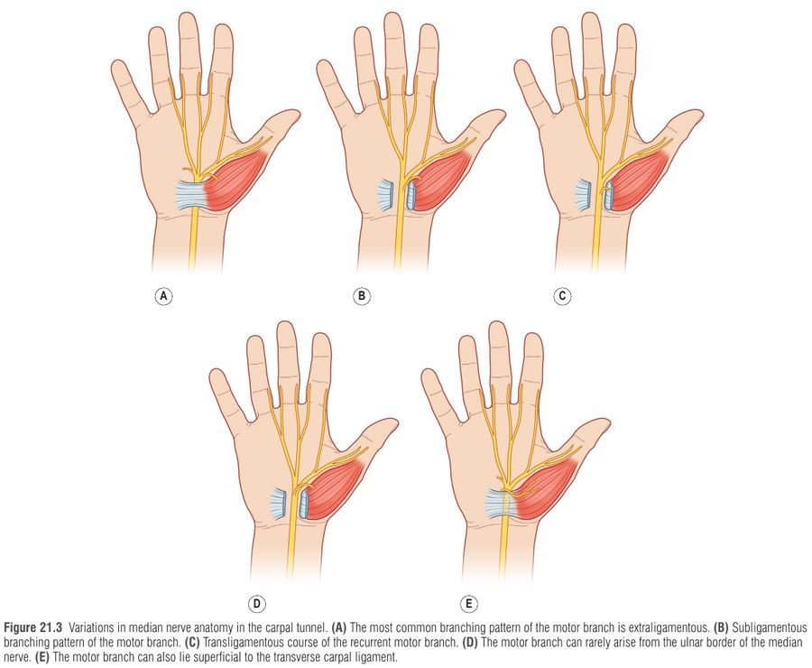
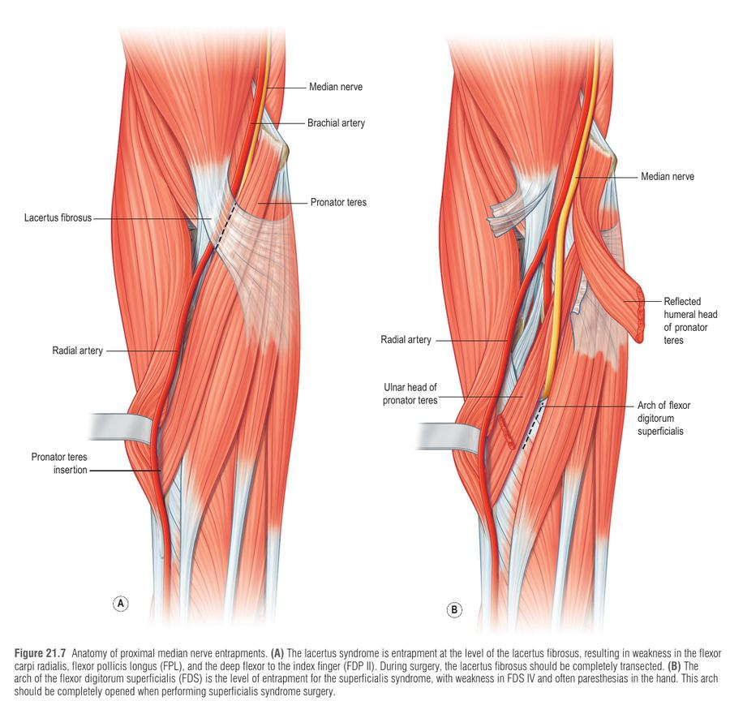
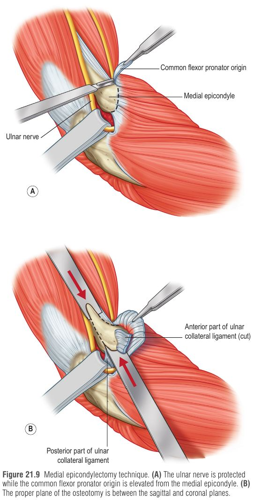
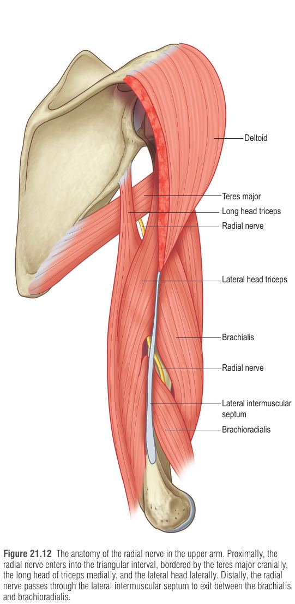
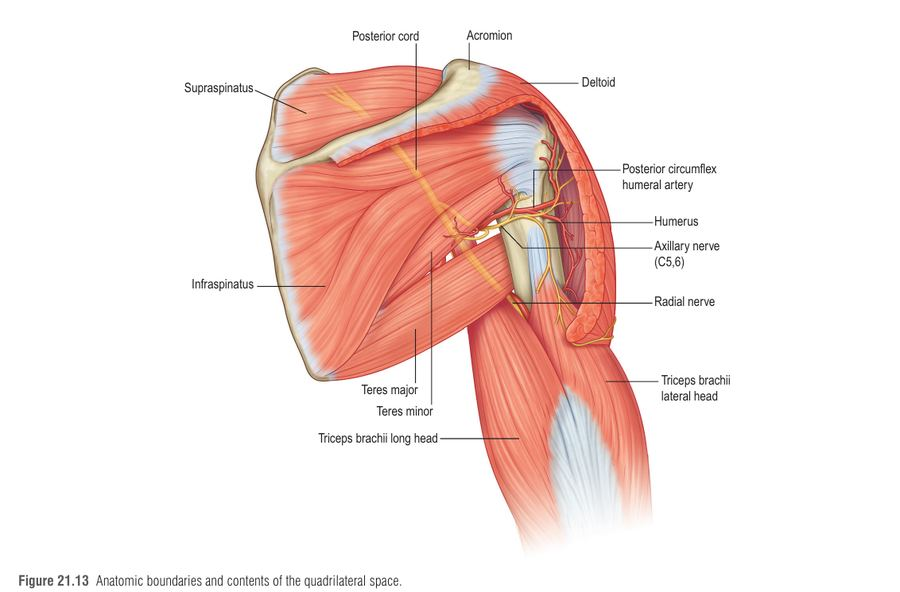

לכידת עצב היקפי (chronic nerve compression – CNC) בגפה העליונה היא מהאבחנות השכיחות ביותר במרפאת היד, והיא הולכת ומתגברת עם עליית השכיחות של סוכרת, השמנה וגיל מבוגר. המסר המרכזי של הפרק: האבחנה היא בראש ובראשונה קלינית – היסטוריה + בדיקה גופנית מסודרת (בדיקת כוח שרירים, scratch collapse test ונקודות כאב) – ולא בדיקה חשמלית. הפרק עובר על הפתופיזיולוגיה, עקרונות הבדיקה, ואז על כל אחת מהלכידות: עצב מדיאני, אולנרי, רדיאלי, ולכידות נוספות בכתף ובזרוע.
לחץ חיצוני/מבני על העצב ← ירידה בזרימת הדם בעצב והפרעה בהובלה האקסונלית ← פגיעה במיאלין (דמיאלינציה) מקומית ← פרסטזיות + עלייה בסף התחושה הסטטי ← דמיאלינציה מפושטת ← חולשה שרירית ← רק בשלב מאוחר: פגיעה באקסונים (Wallerian degeneration) ← נימול קבוע וניוון תנר.
יישום בניתוח: משחררים קודם את הלחץ הדיסטלי (בדרך כלל החמור יותר והסיכון הכירורגי נמוך יותר); אם אין הקלה, שוקלים את האתר הפרוקסימלי (מרווח בין-חולייתי, מקלעת).
קשה לאבחן כי בשני שלישים ממטופלי CTS יש תסמינים מחוץ לתחום העצב המדיאני, ולעיתים כאב דו-צדדי למרות פגיעה חד-צדדית. לכן משתמשים במשולש קליני (clinical triad):
| מרכיב | תפקיד | פרטים |
|---|---|---|
| 1. בדיקת כוח ידנית (manual muscle testing) | קובעת את הגובה (level) של הלכידה | 4 עמדות ו-12 שרירים: כתף (פקטורליס, דלתואיד אחורי); מרפק (ביצפס, טריצפס, אינפרספינטוס); שורש כף היד (ECU, ECRB, FCR); יד (FPL, FDP V, APB, ADM). רגישות 88%, ספציפיות 93%. הבדיקה מפרוקסימלי לדיסטלי. |
| 2. Scratch collapse test (SCT) | מאשרת ומדרגת את חשיבות הלכידה | המטופל יושב, מרפקים 90°, מתנגד ללחץ פנימי דו-צדדי על האמות. שורטים בעדינות מעל האתר החשוד – אובדן רגעי של כוח (רפלקס ספינלי) בצד הפגוע. דיוק 82% ב-CTS ו-89% ב-cubital. שנוי במחלוקת, לא בדיקה עצמאית. אתיל כלוריד מקומי מסייע לדרג רמות ב-DCS. |
| 3. כאב/רגישות ו-Tinel | מאשרת את האתר | כאב בלחץ על העצב ו/או Tinel חיובי בגובה הלכידה. |
| חולשה | עצב | גובה הלכידה |
|---|---|---|
| דלתואיד אחורי | Axillary | Quadrilateral space |
| דלתואיד + ביצפס + אינפרספינטוס | Upper trunk | Scalene interval |
| פקטורליס + דלתואיד אחורי + ביצפס | Infraclavicular plexus | Subclavicular |
| אינפרא + סופרא-ספינטוס | Suprascapular | Suprascapular notch |
| טריצפס | Radial | Triangular interval |
| ECRB + EIP + EPL | Radial | Lateral intermuscular septum |
| ECU | Radial (PIN) | Arcade of Frohse (radial tunnel) |
| FCR + FPL + FDP II | Median | Lacertus fibrosus |
| FDS III–IV | Median | Superficialis arcade |
| FPL + FDP II | Median (AIN) | Anterior interosseous syndrome |
| APB | Median | Carpal tunnel |
| FDP V + ADM | Ulnar | Cubital tunnel |
| ADM | Ulnar | Guyon zone 1 |
| 1-DIO (ADM תקין) | Ulnar | Guyon zone 2 (הענף המוטורי העמוק; בטבלה בספר מסומן zone 3, אך הטקסט מגדיר zone 2) |
אם יש ניוון שרירי מתקדם, פיברילציות או הפרעות תחושה חמורות – לחשוב על מצבים שמחקים לכידה: mononeuritis, Parsonage–Turner syndrome, נוירופתיות מוטוריות. אלו לא יגיבו לשחרור ניתוחי ואף עלולות להחמיר ממנו.
הכי שכיחה מבין הלכידות: שכיחות 1–3 ל-1000 בשנה בארה"ב, פרבלנטיות 50 ל-1000; שחרור CTR הוא הניתוח הנפוץ ביותר בכירורגיית היד. נשים שכיחות יותר.
אנטומיה: הגג – ה-transverse carpal ligament (TCL) (מה-hamate/triquetrum לסקפואיד/טרפזיום); הרצפה – הקרפוס. העצב המדיאני הוא המבנה השטחי ביותר בתעלה. הלחץ המרבי כ-1 ס"מ דיסטלית לקפל שורש כף היד. הענף המוטורי החוזר (recurrent) לתנר: בדרך כלל extraligamentous (46–90%), subligamentous (31%), transligamentous (23%). הענף העורי הפלמרי יוצא כ-5–6 ס"מ פרוקסימלית לקפל. עצב מדיאני מפוצל קשור לעורק מדיאני נמשך (persistent median artery).
אטיולוגיה: ברוב המקרים אידיופתי. גורמים סיסטמיים: אי-ספיקת כליות, בלוטת התריס, RA, סוכרת; הריון (עד 45% בטרימסטר שלישי, לרוב חולף); ילדים – מוקופוליסכרידוזיס. הקשר התעסוקתי החזק היחיד: כלים רוטטים ידניים (לא הקלדה). מבנים תופסי-מקום: עורק מדיאני נמשך, גנגליון, המנגיומה, מקור פרוקסימלי של lumbrical.
קליניקה: כאב לילי, נימול ועקצוץ באגודל ובאצבעות הרדיאליות; מופעל בכפיפה/יישור ממושכים של שורש היד (נהיגה, טלפון); הקלה בנענוע/סחיטת היד; לעיתים דו-צדדי או קרינה פרוקסימלית. בדיקה: חולשת APB (בהשוואה לצד השני), ניוון תנר נדיר אך בעל ערך ניבוי גבוה. חובה לבדוק FCR, FPL, FDP II כדי לשלול double-crush ולכידה פרוקסימלית.
| בדיקה | איך מבצעים | נתונים |
|---|---|---|
| Tinel | הקשה עדינה על המדיאני בתעלה – תחושת "שוק חשמלי" | רגישות/ספציפיות נמוכות, שונות בין בודקים |
| Phalen | כפיפת שורש 60 שניות (מרפק על השולחן) | נמוכות מ-Durkan |
| Durkan | לחיצה ישירה על התעלה 30 שניות | הגבוהה ביותר: רגישות 89%, ספציפיות 96% (עם מכשיר לחץ מכויל) |
| SCT | שריטה מעל התעלה, מיד דיסטלית לקפל | דיוק 82% |
| מונופילמנטים (S-W) | סף תחושה | רגישים יותר לזיהוי מוקדם מאשר צפיפות עצבור |
קריטריוני CTS-6 (Graham): (1) נימול לילי; (2) נימול/עקצוץ בתחום המדיאני; (3) חולשה/ניוון תנר; (4) Tinel; (5) Phalen; (6) אובדן two-point discrimination. חסרון: לא כולל בדיקת שרירים – שחובה לצרף.
NCS: CTS נשאר אבחנה קלינית. NCS מנבא גרוע חומרה, ומטופלים עם קליניקה ו-NCS שלילי משתפרים לאחר ניתוח באותה מידה כמו אלה עם NCS חיובי.

| טכניקה | תיאור | יתרונות/חסרונות |
|---|---|---|
| Wide-awake OCTR (מועדף על המחברים) | הרדמה מקומית בלבד (ללא סדציה, ללא חוסם עורקים): 20 מ"ל לידוקאין 1% + אפינפרין 1:100,000. חתך 3 ס"מ בקו האצבע הטבעת המכופפת, מקביל לקפל התנר, עד דיסטלית לקפל שורש היד. חיתוך fascia + TCL לאורך; שימור palmaris brevis (חתך TCL מתחתיו); שחרור דיסטלי מלא עד ה-fat pad ופרוקסימלי ~1 ס"מ לאמה. סגירה תת-עורית 4-0/5-0 נספגת. | בטוח וחסכוני. חבישה קלה בלבד; מקלחת למחרת; עבודה מלאה כ-8 שבועות; החלשות אחיזה עלולה להימשך חודשים. |
| ECTR (Chow דו-פורטלי / Agee חד-פורטלי) | חתך מתחת ל-TCL עם אנדוסקופ וסכין; Agee – חתך רוחבי קטן ליד palmaris longus פרוקסימלית לקפלים. | פחות כאב צלקת/pillar pain וחזרה מוקדמת לעבודה, אך ההבדלים מתאזנים בשנה; הסיבוך השכיח: שחרור לא מלא. |
| usCTR (בהנחיית אולטרסאונד) | חתך קטן בקפל הפרוקסימלי, סכין hook תחת הדמיה רציפה. | תוצאות מוקדמות מבטיחות. |
"Blow slow before you go" – בהזרקת הרדמה בשיטת wide-awake לא מקדמים את המחט לפני גוש ההרדמה; ה-wheal צריך להיות מוחשי לפני קצה המחט. אין להשרות פרסטזיה – המחט עלולה לפגוע בפסיקולים.
| Lacertus syndrome | Superficialis syndrome | AIN syndrome | |
|---|---|---|---|
| אתר | Lacertus fibrosus (aponeurosis של הביצפס) בפוסה הקוביטלית | FDS arch – כ-6 ס"מ דיסטלית לפוסה; פרוקסימלי להתפצלות AIN | דיסטלי לקשת ה-FDS, אחרי ההתפצלות. הכי נדיר |
| קליניקה | אובדן key/tip pinch, אי-דיוק ("הפלת חפצים"), כאב באמה הקדמית (לעיתים מבולבל עם אפיקונדיליטיס מדיאלית); אין נימול לילי; תחושה נפגעת מאוחר | כאב באמה + חולשת אחיזה + הפרעות תחושה בתחום המדיאני | מוטורי טהור, ללא תחושה; Tinel שלילי. חשוד ל-Parsonage–Turner אם קדם כאב כתף לאחר זיהום ויראלי |
| שרירים חלשים | FCR + FPL + FDP II | FPL + FDP II + FDS IV; FCR תקין | FPL, FDP II–III, pronator quadratus (isolated FPL בחלקית) |
| SCT / לחץ | SCT חיובי מעל ה-lacertus; כאב בלחץ בקצה הפרוקסימלי | SCT ב-FDS arch; לחץ גורם לנימול ביד | SCT באמצע האמה; כאב בלחץ אך לא תסמיני תחושה |
למה מוטורי קודם? ברמת ה-lacertus (Sunderland) הענפים ל-PT ול-FCR קדמיים, ל-FPL ול-FDP II מדיאליים, והסיבים התחושתיים עמוקים – לכן חולשה קודמת לתחושה. טיפול שמרני: הזרקת טריאמצינולון בקצה ה-lacertus, פיזיותרפיה, שינוי פעילות (ההשפעה כנראה הפחתת בצקת ודלקת נוירוגנית). ב-Parsonage–Turner – לשקול גם את הכתף.
שחרור lacertus (wide-awake): 30–40 מ"ל לידוקאין 1% + אפינפרין + 2–3 מ"ל ביקרבונט; חתך רוחבי 2–3 ס"מ בקפל הקוביטלי, זהירות מענפי ה-medial antebrachial cutaneous nerve (MACN); חיתוך fascia של PT וחיתוך מלא של ה-lacertus; בדיקת כוח FPL/FDP II בתוך הניתוח – החזרת כוח מיידית. בדיקת ה-superficialis sling באצבע קטנה של המנתח. בסקירה של 10 שנים: מנותחים – ללא הישנות; בשמרני רק 30% הקלה. בחולי CTS: לבדוק תמיד lacertus, ואם שניהם – לשחרר את שניהם בבת אחת. Superficialis: גישת Zancolli מיני-פולשנית, חתך 3 ס"מ מעל FDS arch, לעקוב אחרי העצב כ-3 ס"מ דיסטלית; ב-AIN – גישה דיסטלית נוספת לשחרור אחרי ההתפצלות.

גורם שכיח: נגע תופס מקום – בעיקר גנגליון. אחרים: hypothenar hammer syndrome (טראומה חוזרת/פקקת עורק אולנרי), "handlebar palsy" של רוכבי אופניים למרחקים, שברים ב-hook of hamate, RA. אפשר גם double-crush עם קוביטל. שחרור CTR עשוי לעיתים לפתור תסמינים אולנריים (דקומפרסיה עקיפה).
אנטומיה: רדיאלית – ה-hamate; volar – volar carpal ligament; dorsal – TCL ו-pisohamate ligament; אולנרית – פיסיפורם, גיד FCU ושריר ADM.
| אזור | גבולות/תוכן | קליניקה | בדיקה |
|---|---|---|---|
| Zone I | מקצה ה-volar carpal ligament עד התפצלות העצב | מוטורי + תחושתי | חולשת ADM; SCT בקפל שורש היד; Tinel חיובי |
| Zone II | הענף המוטורי העמוק – עוטף את ה-hook of hamate ומתחת ל-pisohamate ligament | מוטורי בלבד (אינטרוסאי, lumbricals IV–V, adductor pollicis, FPB עמוק) | ADM תקין, 1-DIO חלש; SCT בגובה ה-hook; Tinel שלילי |
| Zone III | הענף השטחי (בין palmaris brevis להיפותנר) | תחושתי בלבד | SCT ulnovolar דיסטלי לפיסיפורם; Tinel חיובי |
בדיקה: חובה FDP V (לשלילת לכידה במרפק); תחושה דורסו-אולנרית נעדרת = לכידה פרוקסימלית לענף הדורסלי; Allen test (חשד ל-hypothenar hammer). אולטרסאונד מזהה גנגליון וזרימת עורק; CT/MRI בשברים. טיפול: NSAIDs/סד אפשריים, אך אם יש סיבה אנטומית – ניתוח: חתך 6–7 ס"מ בין ה-hamate לפיסיפורם, FCU מוסט, מעקב אחר עורק ועצב, חיתוך volar carpal ligament ו-palmaris brevis, חיפוש גנגליון/גידול, דקומפרסיה של הענף המוטורי (קצה fibrous של ההיפותנר ורצועות מה-hook), הענף התחושתי – לרוב נלכד ע"י אנוריזמה/פקקת/גנגליון. חזרה לעבודה: כ-8 שבועות לעובדים ידניים, 2–4 שבועות למשרדיים.
שנייה בשכיחותה אחרי CTS. אבחנה קלינית – EDS שלילי לעיתים קרובות למרות ממצאים חמורים.
אנטומיה: Arcade of Struthers – רצועה עמוקה ~8 ס"מ פרוקסימלית לאפיקונדילוס המדיאלי (אתר נדיר); העצב עובר מאחורי האפיקונדילוס לתעלה: הגג – fascia מ-FCU ל-ligament of Osborne (האתר השכיח ביותר, מיד דיסטלית לאפיקונדילוס), הרצפה – ה-ulnar collateral ligament. אחר כך בין ראשי ה-FCU ומתחת ל-flexor pronator aponeurosis. ה-MACN עובר מאחורי העצב – פגיעה בו גורמת לנוירומה כואבת.
היסטוריה: החשוב ביותר – כרוניות: סימפטומים לסירוגין בכפיפת מרפק (איסכמיה חולפת) מגיבים היטב; נימול/חולשה קבועים – פחות צפוי. בדיקה: חולשה של FDP V + ADM (לעומת Guyon zone 1 שבו רק ADM); SCT; Tinel (רגישות 70%); Elbow flexion pressure test – רגישות 98% (לחץ דיגיטלי על התעלה במרפק כפוף 60 שניות). EDS: מהירות הולכה <50 m/s חיובית, אך שיעור שלילי כוזב >10%. טיפ קליני: נימול אולנרי + EDS שלילי → לבדוק תחושה בתחום ה-medial brachial cutaneous (זרוע מדיאלית) – אובדן = C8 radiculopathy או thoracic outlet.
טיפול שמרני: סטרואיד מקומי, שינוי פעילות, סד לילי (מניעת כפיפת מרפק מעל 45°), פיזיותרפיה; ניתוח אחרי 2–4 חודשי כישלון או החמרה.
| טכניקה | עיקרון/פרטים | הערות |
|---|---|---|
| In situ decompression (מועדף במחברים; wide-awake) | חתך 3 ס"מ מיד דיסטלית לסולקוס; חשיפת Osborne, שחרור ורצועות מכווצות | הצלחה 93% (Goldfarb); שקולה לטרנספוזיציה |
| Simple decompression | במקרה של חשד לפגיעה פרוקסימלית – הרדמה 8–10 ס"מ פרוקסימלית; שחרור Struthers ← Osborne ← FCU fascia; העצב נשאר במקומו; בדיקת טווח תנועה | אם יש סובלוקסציה – epicondylectomy |
| אנדוסקופי | חתך 15–35 מ"מ | המטומה שכיחה יותר |
| טרנספוזיציה (subcutaneous / submuscular – SMUNT) | העברת העצב קדמית לציר הכפיפה להפחתת מתיחה; SMUNT כולל חיתוך flexor-pronator והארכה מדורגת | ביקורת: פגיעה באספקת דם סגמנטלית |
| Medial epicondylectomy | תת-פריוסטלי; מישור בין sagittal ו-coronal; שימור ה-MCL | כאב מרפק מתמשך עד 45% |
סיבוכים/תוצאות: הישנות/היעדר הקלה שכיחים הרבה יותר מ-CTS; חיזוי לניתוח חוזר – שבר מרפק קודם; נוירומת MACN והיפראסתזיה; סובלוקסציה; המטומה. תוצאות פחות טובות מ-CTS – לעיתים המטרה היא מניעת המשך נזק.

שרשרת האתרים (מפרוקסימלי לדיסטלי): Triangular interval (זרוע פרוקסימלית) ← Lateral intermuscular septum – LIS (זרוע דיסטלית, ~10 ס"מ מעל אפיקונדילוס לטרלי) ← Radial tunnel / arcade of Frohse (PIN, אמה פרוקסימלית) ← Wartenberg (SBRN, ~9 ס"מ מעל סטיילואיד).
| תסמונת | אנטומיה/אתר | קליניקה ובדיקה | טיפול |
|---|---|---|---|
| Wartenberg (SBRN) | הענף עובר בין BR ל-ECRL, כ-9 ס"מ פרוקסימלית לסטיילואיד; מספק תחושה לדורסום 3 האצבעות הרדיאליות | כאב/דיסאסתזיה דורסורדיאלי; אין חולשה מוטורית; Tinel חיובי בקשת BR–ECRL, SCT חיובי. להבדיל מ-de Quervain (Finkelstein חיובי בשניהם; ב-de Quervain – כאב בלחץ על תא ראשון דורסלי, Tinel שלילי) | לרוב הפוגה בהסרת גורם (שעון/צמיד הדוק), סד, NSAIDs; סטרואידים – זהירות (אטרופיה תת-עורית). ניתוח: שחרור הפאשיה בין BR ל-ECRL, לעיתים הסרת חלק מגיד BR; הצלחה 74% |
| Radial tunnel / PIN | קשת Frohse (קצה פרוקסימלי של ה-supinator) – השכיח ביותר (עד 200 mmHg בכיווץ); 5 אתרים אפשריים: רצועות ל-radiocapitellar, leash of Henry, קצה ECRB, Frohse, קצה דיסטלי של supinator (נדיר, מסתמן אחרת) | כאב דורסלי-פרוקסימלי באמה, אחרי מאמץ ובלילה; לרוב מבולבל עם lateral epicondylitis (95% מהמנותחים נכשלו בטיפול באפיקונדיליטיס); רגישות 3–4 ס"מ דיסטלית ב-mobile wad. חולשת ECU (הסיב השטחי בקשת Frohse); SCT ~3 אצבעות דיסטלית לאפיקונדילוס | הזרקת סטרואיד (72% תגובה ב-6 שבועות); ניתוח אחרי 2–3 חודשים: גישה אחורית, שחרור קצה ECRB אם צריך, ושחרור 2–3 ס"מ מהקצה הפרוקסימלי של ה-supinator. הצלחה 88% (40/45) |
| Lateral intermuscular syndrome | הרדיאלי חודר את ה-LIS כ-10 ס"מ פרוקסימלית לאפיקונדילוס לטרלי | כאב עמום בזרוע לטרלית דיסטלית אחרי מאמץ (עובדים ידניים, גולשי סקי קרוס-קאנטרי); חולשת פישוט שורש ואצבעות; טריצפס תקין; SCT בגובה החדירה | שמרני; ניתוח בהרדמה כללית – חתך אלכסוני, זיהוי posterior antebrachial cutaneous n. והליכה איתו לעצב, שחרור רצועות ב-LIS. תנועה מיידית ללא עומס; עבודה ידנית אחרי 4–6 שבועות |
| Triangular interval | גבולות: teres major (עליון), long head (מדיאלי), lateral head של הטריצפס. מחיצה שרירית בין ראשי הטריצפס היא הגורם | כאב עמום ודורסולטרלי בזרוע, לילי; פרסטזיות בתחום הרדיאלי; חולשת טריצפס + פישוט שורש ואצבעות (בדיקה: מרפקים 90°, דחיפה מעבר ל-90°) | שמרני; ניתוח לאחר ~3 חודשים – חתך דורסולטרלי 5–6 ס"מ מקצה הדלתואיד, שחרור המחיצה. אם יש גם axillary – לבדוק דלתואיד אחורי ולטפל בו |
טניס אלבו שלא מגיב לטיפול שמרני? לבדוק כוח ECU. חולשה = radial tunnel syndrome.

| תסמונת | אנטומיה/אטיולוגיה | קליניקה | הדמיה/EMG | טיפול |
|---|---|---|---|---|
| Quadrilateral space (Axillary) | גבולות: teres minor (עליון), צוואר ההומרוס (לטרלי), long head triceps (מדיאלי), teres major (תחתון); תוכן: axillary n. + PCHA. הענף האחורי (דלתואיד אחורי + TMi) נפגע לרוב. הגורם השכיח: רצועות סיביות. צעירים אתלטים (זורקים), מנוע כיסא גלגלים | כאב אחורי בכתף, לילי (לא ישנים על הכתף), פרסטזיות מעל הדלתואיד; חולשת דלתואיד אחורי; SCT ורגישות אחוריים | EMG בלתי-רגיש אך ספציפי; אנגיוגרפיה לרוב שלילית; MRI – ניוון וחדירה שומנית ב-TMi; US + Doppler של PCHA | שמרני (סטרואיד, NSAIDs, חיזוק); ניתוח – חתך 10 ס"מ בגבול תחתון של הדלתואיד האחורי; בווסקולרי – קשירת עורק ± טרומבוליזה |
| Musculocutaneous | בין coracobrachialis לראש הקצר של הביצפס (~8–10 ס"מ מהמפרק); נדירה. לאחר ארתרוסקופיה/tenodesis, הרמת משקולות | כאב בזרוע במאמץ ביצפס, חולשה, פרסטזיות באמה לטרלית וולרית. אם הביצפס תקין ויש פרסטזיות בלבד – lateral antebrachial cutaneous | EMG לניוון | NSAIDs; ניתוח אם ניוון או כאב כרוני; חתך 10 ס"מ מ-2 ס"מ דיסטלית לקורקואיד |
| Suprascapular | שני אתרים: ה-suprascapular notch (transverse scapular ligament) והספינוגלנואיד (spinoglenoid ligament). הגורם הראשי בסדרה: טראומה; גנגליון, פגיעות rotator cuff | כאב פוסטרולטרלי בכתף, לרוב אתלטים; חולשת סיבוב חיצוני (אינפרספינטוס), לעיתים supraspinatus; משולבת עם axillary בכרבע. האבחנה מתעכבת כי מטפלים בצוואר/cuff | MRI (ניוון/חדירה שומנית + פתולוגיית cuff); US לגנגליון; EMG – שלילי/חיובי כוזב | שמרני עד 80%; שאיבת גנגליון בהנחיית US; שחרור ארתרוסקופי הוא הטיפול המועדף כיום |
| Dorsal scapular | מחדיר את ה-middle scalene, מתחת ל-levator, ואז מתחת לקצה פרוקסימלי של rhomboid major (האתר השכיח). טראומת צוואר, פעילות over-head | כאב עמום בגבול המדיאלי של השכמה ± צוואר; "winging" קל (הסטת השכמה); בדרך כלל אין פרסטזיות (עצב מוטורי); שלילת C5 radiculopathy (אינפרספינטוס) | EDS מדויק רק ~50% | חיזוק, סטרואיד, שינוי פעילות; ניתוח בשיטת wide-awake בפינה המדיאלית העליונה של השכמה (העצב ~1.5 ס"מ מהקצה) |

M – Muscle testing: קובע את הגובה.
S – Scratch collapse: מאשר את האתר.
P – Pain / Pressure (Tinel): מצביע על הנקודה המדויקת.
Zone I = Both (מוטורי + תחושתי), Zone II = Motor (הענף העמוק), Zone III = Sensory (הענף השטחי). לכן ב-Zone II ה-Tinel שלילי (אין סיבים תחושתיים).
דמייני צינור גינה (העצב) שמישהו דורך עליו. בהתחלה הזרימה ממשיכה אך המים "מגרדים" (פרסטזיות). אחרי זמן, הלחץ פוגע בציפוי (דמיאלינציה) והמים חלשים (חולשה M4) – אבל הצינור עדיין שלם, ולכן בדיקת "איכות הצינור" (EMG) יוצאת תקינה. רק אחרי שנים הצינור נקרע (ניוון). כדי למצוא את מקום הדריכה, עוקבים מהברז (הכתף) אל הפיה (היד) ובודקים איפה הזרימה נחלשת – זו בדיקת כוח שרירים מפרוקסימלי לדיסטלי. שריטה על המקום הנכון גורמת "לזרוע" להרפות – SCT.
גבר בן 42, עובד משרד וחובב טניס, מתלונן מזה חצי שנה על כאב בצד הלטרלי של המרפק, שלא השתפר לאחר סדרת פיזיותרפיה והזרקת סטרואיד לאפיקונדילוס לטרלי בטענה ל"טניס אלבו". הכאב מגיע גם לאמה הדורסלית ומחמיר בלילה ואחרי מאמץ. בבדיקה: רגישות בלחץ כ-3–4 ס"מ דיסטלית לאפיקונדילוס, מעל ה-mobile wad. כוח ה-ECU חלש מול הצד הבריא, בעוד הטריצפס תקין; תחושה תקינה בכל היד; SCT חיובי כשלוש אצבעות דיסטלית לאפיקונדילוס. ל-NCS אין ממצאים.